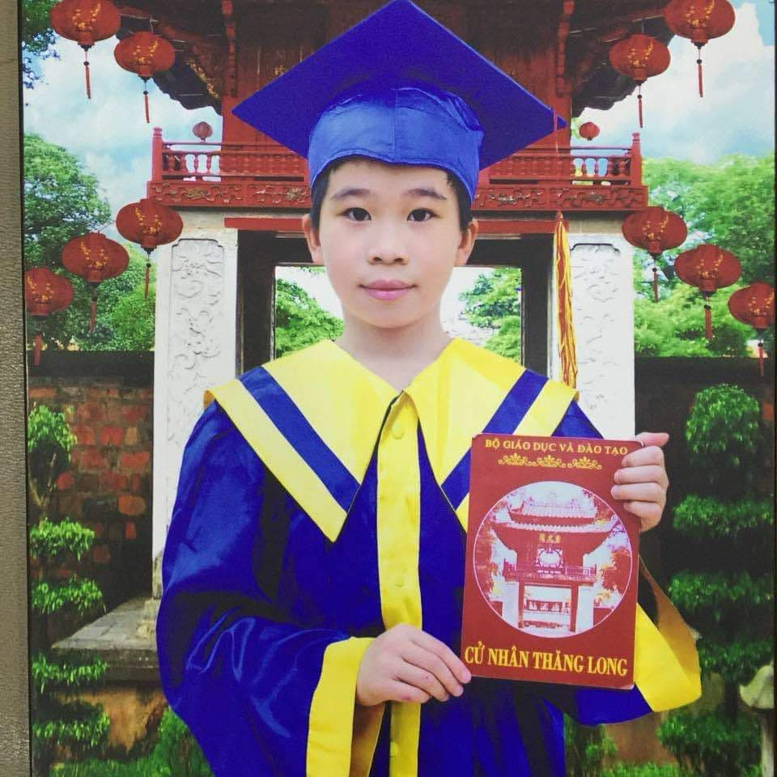

Bản thân
Tên: Nguyễn Duy Đức
Sinh năm:2005
Nghề nghiệp: Sinh viên
Mô tả: Từ nhỏ em là một người nghịch ngợm, hậu đậu, không hoạt bát khiến nhiều người không yêu quý. Vì thế trong quá trình trưởng thành em đã cố gắng học tập và rèn luyện để xóa bỏ đi những khuyết điểm bản thân. Dù cố gắng là vật nhưng em vẫn có những thói xấu như khá lười biếng và đôi khi không tự giác làm bài nhưng em sẽ cô gắng sửa đổi những thói xấu này
